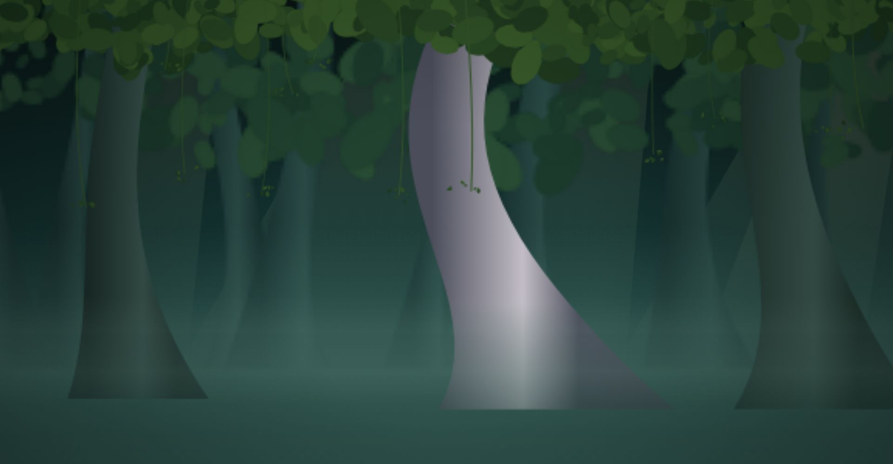
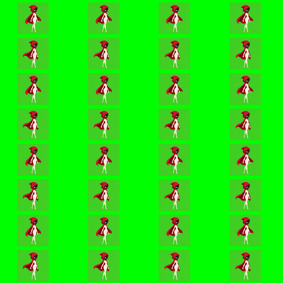
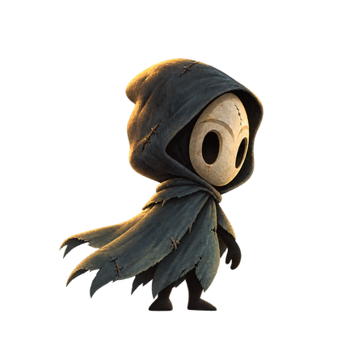
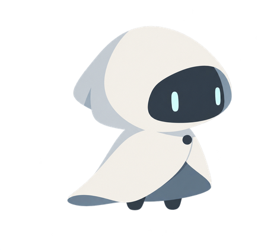
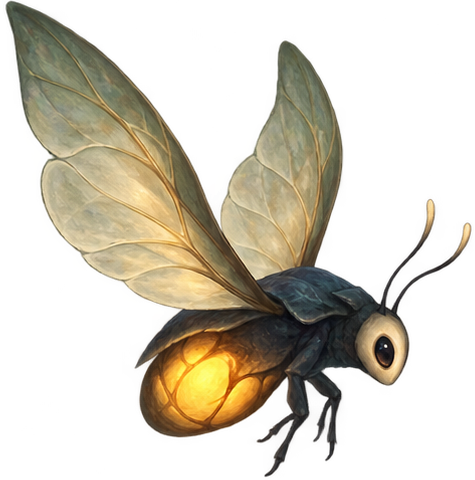
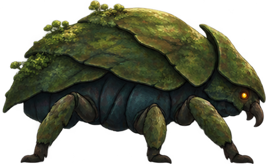
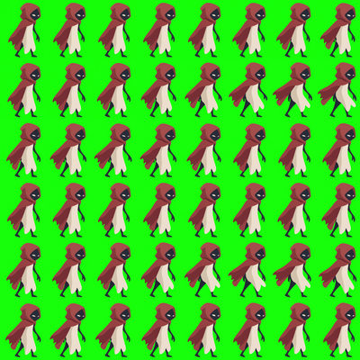
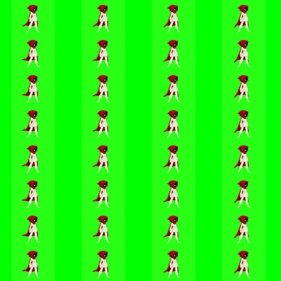
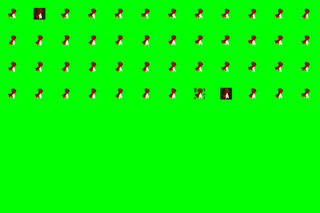

Герой игры — маленький странник в алом капюшоне.
Он давно идёт через старый лес, где деревья выше башен, дождь не заканчивается,
а мшистые ветви служат дорогами.
В лесу живут странные существа: одни светятся и показывают путь,
другие прячутся в тени и нападают первыми. Говорят, раньше здесь стояли белые чертоги,
но они пали, и от них остался только огромный Панцирь в самой глубине леса.
Дорогу к нему охраняет Страж. Странник идёт именно туда —
зачем, узнает тот, кто пройдёт игру до конца.



Рядом с ним по лесу идут и другие. Белая героиня — дух в белом плаще,
кто она — лес не говорит сразу.
Чёрный путник прячется в тени и никогда не снимает маску,
а Дух в кимоно — самый старый житель леса: он ещё помнит белые чертоги.
Мотылёк-фонарик светится и освещает страннику путь,
а моховой жук носит на панцире тлеющие огоньки.




